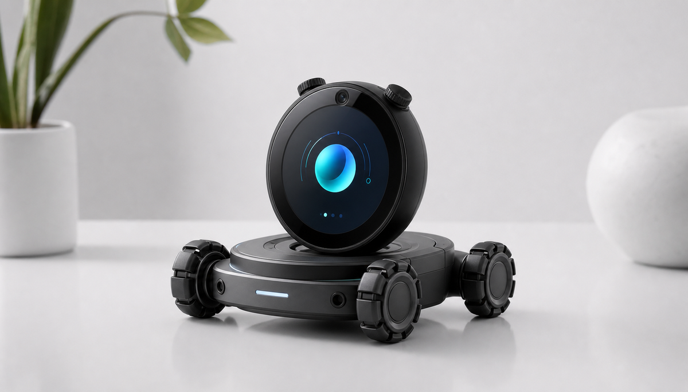

雷达 SLAM
面向室内外移动机器人，构建稳定地图与定位能力，支撑导航、巡检、搬运和科研实验。
Why
一台机器人是否真正可用，关键不在于它有没有电机，而在于它能不能知道自己在哪里、周围有什么、下一步该往哪走。
因此我们把重点放在空间智能：雷达 SLAM、视觉定位、传感器融合、底盘控制、环境感知和系统集成。它们组合起来，才会变成可以服务具体场景的机器人能力。
Solutions
面向室内外移动机器人，构建稳定地图与定位能力，支撑导航、巡检、搬运和科研实验。
结合摄像头、特征识别和环境理解，让机器人在复杂空间中获得位置、姿态和场景信息。
融合雷达、视觉、IMU、里程计等信息，提升机器人在弱纹理、遮挡和动态环境下的稳定性。
围绕差速、全向、履带等底盘形态，完成运动控制、避障、路径规划和外设接入。
从结构、电控、软件、交互到外观样机，推进机器人从概念验证到可演示、可部署的系统。
面向教育科研、巡检服务、展示互动和特殊场景，提供模块化方案、技术支持与联合开发。
Process
先明确机器人在哪里工作、要看见什么、要移动多远、失败代价是什么。
根据空间、速度、精度和预算，选择雷达、相机、底盘和计算平台。
把定位建图、感知、控制、通信和交互接成一台可运行的机器人。
在真实环境中修正地图、参数、路径和异常处理，让方案变得可用。

Bridge
屏幕、摄像头、麦克风、旋钮和开放接口，可以成为机器人交互与感知的入口；底盘、SLAM 和视觉定位，则让硬件从桌面进入真实空间。
Contact